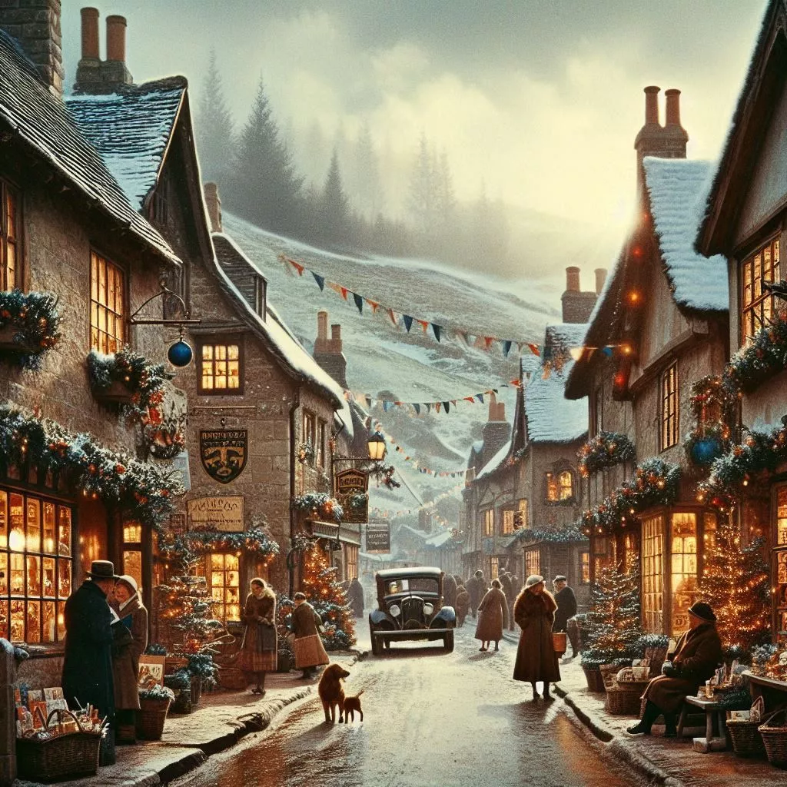
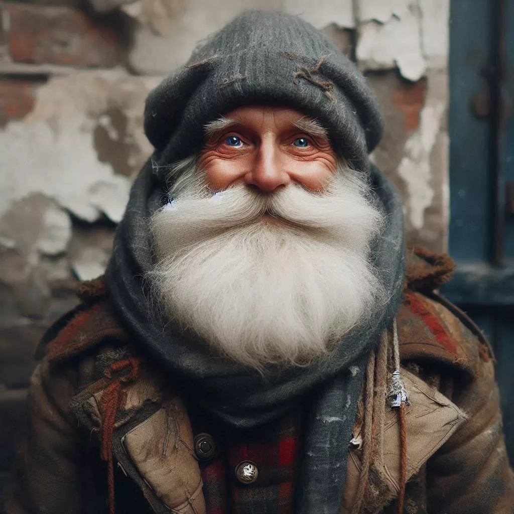
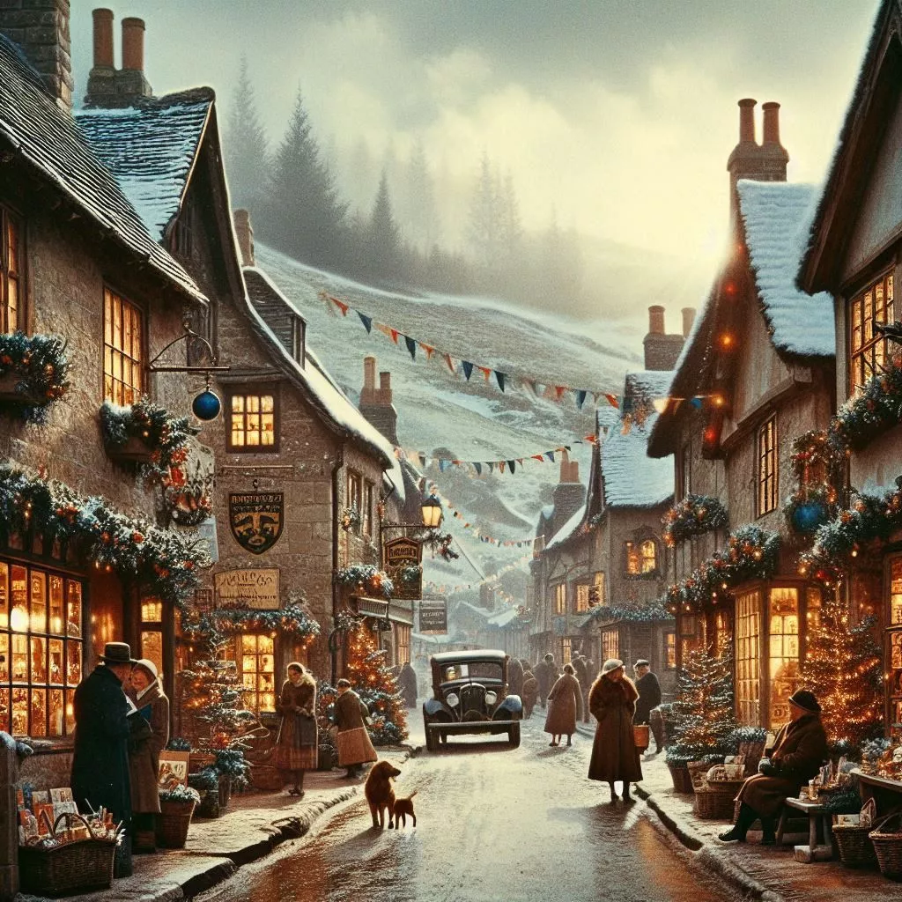
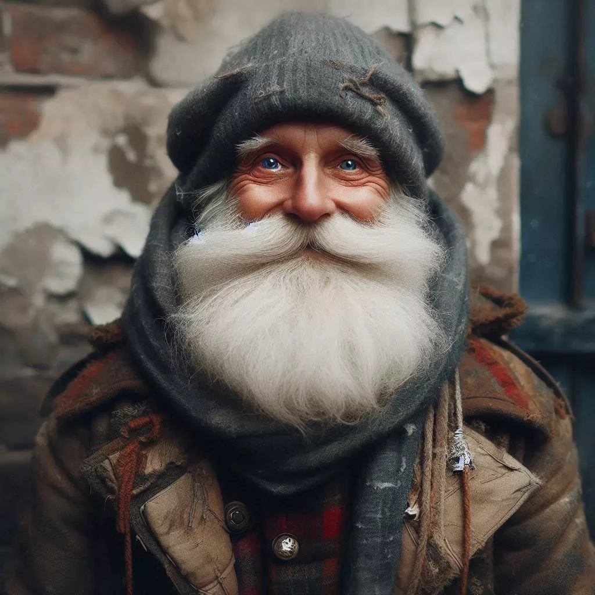

- About
- Characters
- Concept Art
an inspirational christmas story about a boy named john who is selfish and want everything to himself but later learns the importance of christmas. The main focus of the story is to let the us know the importance of sharing and the christmas cheer.
Act 1: John’s Selfish Wish
Once upon a snowy Christmas Eve, in the cozy town of Evergreen Hollow, lived a boy named John. John was known for his unruly mop of hair and a heart as cold as the winter wind. He had one wish—to receive the grandest Christmas present of all. Not just any gift, mind you, but something so magnificent that it would outshine the North Star itself.John’s list grew longer each day: a shiny bicycle, a mountain of toys, and even a pet dragon (yes, he was quite imaginative). His greed knew no bounds. He’d snatch cookies from the neighbor’s windowsill and hoard candy canes like a dragon guarding its treasure, neighbours make a lot of complains about him to his parent and his parent hopes the miracle of the season changes him.
Act 2: The Mysterious Visitor
One frosty night, as John lay in bed, dreaming of his extravagant Christmas loot, a soft knock echoed through his room. Startled, he sat up. The door creaked open, revealing an old man with twinkling eyes and a snow-white beard—the kind of beard that whispered secrets.“John,” the old man said, “I am Nicholas, the Keeper of Christmas Wishes. Tonight, I grant you one wish.”
John’s eyes widened. His heart raced. This was it—the moment he’d been waiting for. “I want everything!” he blurted out. “All the toys, all the treats, and even that pet dragon!”
Nicholas raised an eyebrow. “Very well,” he said. “But remember, wishes have consequences.”
Act 3: The Empty Room
Christmas morning arrived, and John rushed downstairs, expecting a room overflowing with gifts. But to his astonishment, the tree stood bare, and the fireplace held no stockings. His selfish wish had come true—the room was empty.Confused and disappointed, John sat amidst the silence. Outside, snowflakes danced, and carolers sang. He felt a pang of loneliness, deeper than any toy could fill.
Act 4: The Lesson Unwrapped
As the day wore on, John wandered the snow-covered streets. He saw families sharing laughter, friends exchanging gifts, and strangers helping one another. The warmth of their gestures thawed something within him.In the town square, Nicholas appeared again. “John,” he said, “your wish revealed the true magic of Christmas. It’s not about what you receive; it’s about what you give.”
John’s eyes filled with tears. “But I have nothing to give,” he whispered.
Nicholas smiled. “Ah, my boy, you do.” He pointed to a nearby shelter where people huddled for warmth. “Share your warmth, your kindness, and your heart. That’s the greatest gift.”
Act 5: A New Wish
John spent the rest of Christmas day volunteering at the shelter. He served soup, sang carols, and listened to stories from those who had little. And in that humble room, surrounded by people who shared what little they had, John felt richer than ever before.That night, he made a new wish—to be a giver, not a taker. And as the snow fell gently outside, John understood the true meaning of Christmas: love, compassion, and the joy of sharing.
The story takes place in the England village of Evergreen Hollow, where john lives with is parent "Mr & Mrs Thompson" at the cottage located at the edge of Evergreen Hollow, and the year is 1950
Evergreen Hollow
A village filled with joy and happiness, cobbled streets wind through the heart of the village. Gas lamps cast a warm glow, illuminating the way for bundled-up townsfolk, In the village square, a towering Christmas tree stands sentinel. Its branches cradle twinkling lights, silver baubles, and memories of countless winters. Children gather, their laughter echoing off the surrounding buildings. The scent of roasted chestnuts mingles with pine, and carolers sing ancient melodies.John
The main character of the story
Mr Thompson
John’s father who carves wooden ornaments for the Christmas tree - a tradition passed down through generations.
Mrs Thompson
John’s mother who is fund of baking gingerbread cookies that smell like childhood memories
Old man Nicholas
The Keeper of Christmas Wishes
 


